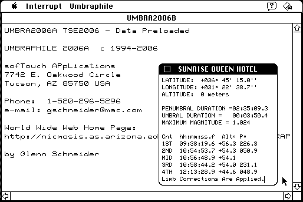

Download
UMBRAPHILE_2006B_68Kd.zip (352K) UMBRAPHILE 2006B repackaged into a zipped hfs disk image and checksum file. The disk image can be mounted with Mini vMac.
UMBRAPHILE_2006B_68K.zip (348K) UMBRAPHILE 2006B in the original format (OS X compressed archive).
copyright: sofTouch APpLications
mod date: Mar 1, 2006
license: freeware
official url :
UMBRAPHILE - Automated Eclipse Photography for Macintosh
"For solar eclipse aficionados". For system "7.0" and later. By Glenn Schneider. Source code available "as PostScript".

If you find these downloads useful, please consider helping the Gryphel Project, which hosts them.
Here are the md5 checksums for the downloads, signed with Gryphel Key 5:
--------- GRY SIGNED TEXT --------- 686bb32c98e49c07611e5f3acf95fb99 UMBRAPHILE_2006B_68Kd.zip b5e239d3fd69bf734c87433539496010 UMBRAPHILE_2006B_68K.zip ------- BEGIN GRY SIGNATURE ------- Gry/4Xa8CFcUzxdN/ABck74nYMCLv68pRA7ybHM+mGQ/eNVbELzB5QoElgB9cmf4 XYRB5ncfy5iCZ0Hq86GcVtKK+Jcy3BCV4j++lA4OB3hNc+ZE7M/ojk2JIy7rn7Dc 1/kW/nw31yZL6FgIJy74P6I6ynbOuG+nLrY0ZjQmp1aJDVulBJl9CvBvVeRQTrDf -------- END GRY SIGNATURE --------